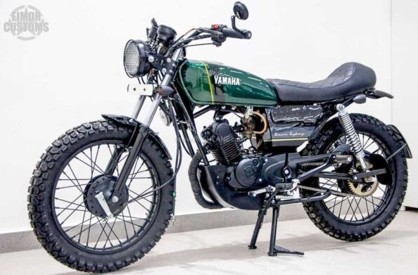
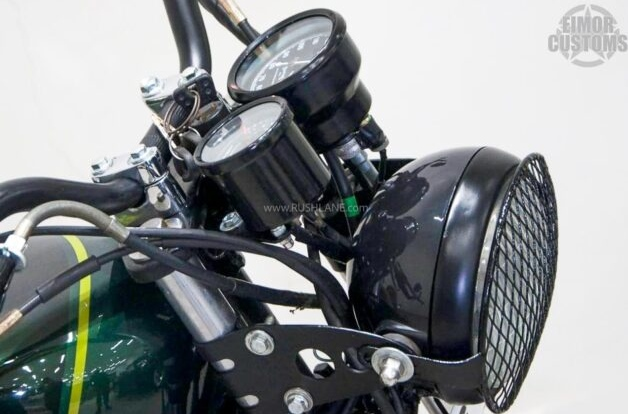
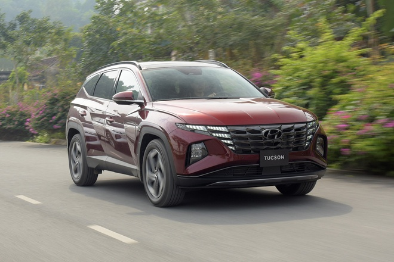

Mới đây, người tiêu dùng tại thị trường Ấn Độ không khỏi bất ngờ trước chiếc xe máy Yamaha “độ” cực bắt mắt. Được biết, một xưởng độ có tên Eimor đã quyết định khôi phục lại siêu phẩm một thời Libero và “lột xác” ngoạn mục thành kiểu dáng hoàn toàn mới lạ này.
Trước đó, mẫu xe Yamaha Libero đã bị ngừng sản xuất vào năm 2010 bởi sự cạnh tranh cực gắt trước đối thủ như Hero, Honda và Bajaj. Tuy nhiên, hiện nay trên đường phố Ấn Độ nhiều người vẫn thường xuyên bắt gặp những mẫu xe này được tân trang lại trông rất độc đáo.
Mẫu xe độ phong cách Café Racer của xưởng Eimor đã được chia sẻ trên trang Facebook của Eimor Customs. Chủ nhân của chiếc xe máy đặc biệt này không ngừng bày tỏ niềm yêu thích khi nó là mẫu xe đầu tiên của anh ấy. Vì vậy, xưởng độ Eimor không chỉ hồi sinh xe mà còn tùy chỉnh nó theo ý thích của chủ sở hữu thành một chiếc Cafe Racer tuyệt đẹp. Mặc dù chiếc xe dựa trên Libero nhưng nó trông giống RX100 hơn sau khi sửa đổi, toàn bộ diện mạo được thay đổi bởi rất nhiều cập nhật được thực hiện trên phần thân xe.
Đầu tiên, chiếc xe có đèn pha mới với lưới tản nhiệt bảo vệ, cùng với cặp đèn báo rẽ, kết hợp với chắn bùn trước và sau đã được cắt ngắn trong khi phía sau cũng có một bộ ôm lốp. Một điểm nhấn chính khác là ghế một mảnh được chế tạo riêng với họa tiết đường gân và đường vân màu vàng kim đặc trưng, gương chiếu hậu cuối thanh tròn đã được lắp trên ghi đông giúp tăng thêm vẻ đẹp cổ điển.
Bình xăng được chế tạo riêng đã được bao bọc bởi lớp sơn xanh lá cây đẹp mắt với các đường sọc màu vàng trong khi các tấm ốp bên được sơn màu đen và xám độc đáo. Ngoài ra, vỏ động cơ và ống xả đã được sơn đen hoàn toàn tạo nên vẻ ngoài hai tông màu thể thao. Eimor cũng đã kết hợp một ống xả hậu mãi mới với một ống xả ngắn hơn và một bộ giảm thanh cao cấp.
Libero được trang bị động cơ 4 thì, xi-lanh đơn, dung tích 106 cc, kết hợp với hộp số 4 cấp. Hệ thống truyền động này được sử dụng để tạo ra công suất khiêm tốn 7,7 mã lực và mô-men xoắn cực đại 7,8 Nm.